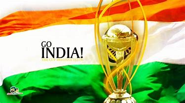
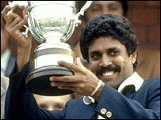
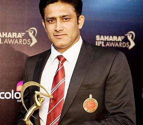
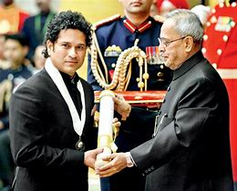
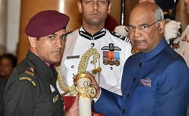
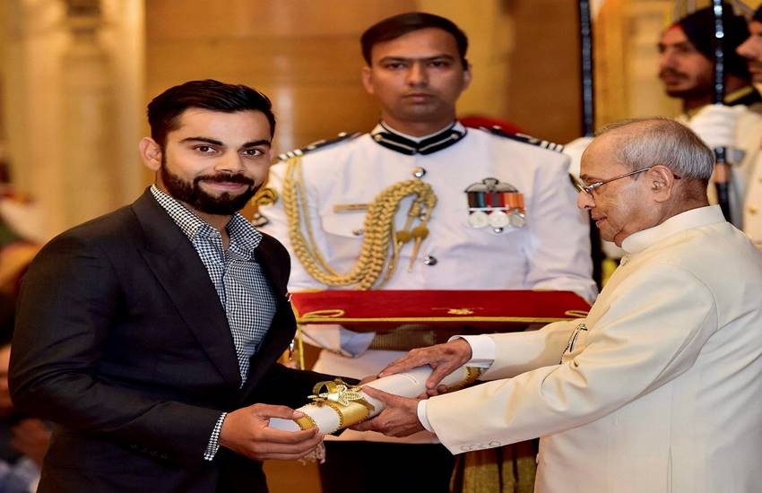
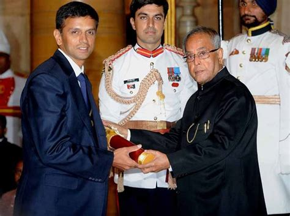
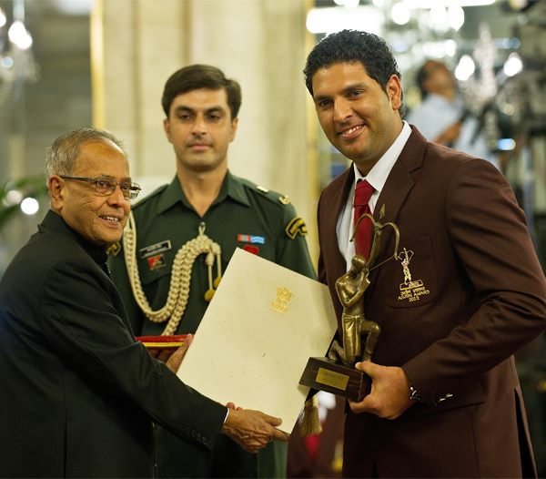

History of Indian cricketers

Receiving-Awards

- Full name:-Kapil Dev Ram Nikhanj
- Born:-6 January 1959 (age 60)
- Chandigarh, Punjab, India
- Batting:-Right-handed
- Bowling:-Right arm Fast
- Role:-Bowling All-rounder

- Full name:-Anil Kumble
- Born:-17 October 1970 (age 48)
- Bengaluru, Karnataka State, India
- Batting:-Right-handed
- Bowling:-Right-arm leg break
- Role:-Bowler

- Full name:-Sachin Ramesh Tendulkar
- Born:-24 April 1973 (age 45)
- Bombay (now Mumbai), Maharashtra
- Batting:-Right-handed
- Bowling:-Right-arm medium
- Role:-Batsman

- Full name:-Mahendra Singh Dhoni
- Born:-7 July 1981 (age 37)
- Ranchi, Bihar (now Jharkhand), India
- Batting:-Right-handed
- Bowling:-Right-arm medium
- Role:-Wicket-keeper,batsman

- Full name:-Virat Kohli
- Born:-November 5, 1988 (age 30)
- Delhi, India
- Batting:-Right-handed
- Bowling:-Right-arm medium
- Role:-Top-order batsman, Captain

- Full name:-Rahul Sharad Dravid
- Born:-11 January 1973 (age 46)
- Indore, Madhya Pradesh, India
- Batting:-Right-handed
- Bowling:-Right arm off spin
- Role:-Batsman,wicket-keeper

- Full name:-Yuvraj singh
- Born:-12 December 1981 (age 37)
- Chandigarh, India
- Batting:-Left-handed
- Bowling:-Left arm off spin
- Role:-All-rounder

- Full name:-Mithali Dorai Raj
- Born:-3 December 1982 (age 36)
- Jodhpur, India
- Batting:-Right-hand bat
- Bowling:-Right-arm leg break
- Role:-Captain, batswoman